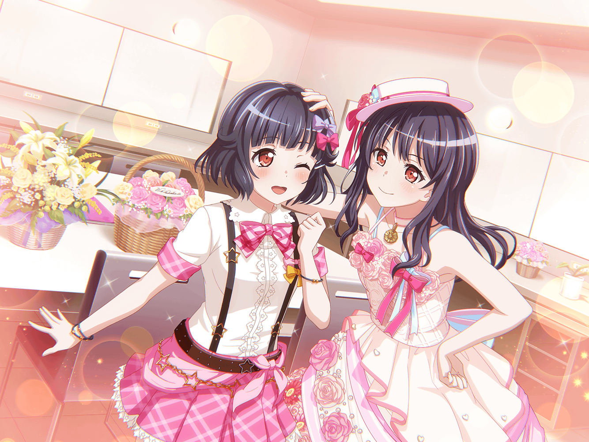

りみ
こんにちは～
沙綾
あ、りみりん。
いらっしゃい！ まだチョココロネあるよ！
りみ
あ、ううん。今日はチョココロネを買いにきたんじゃないの
沙綾
え？ じゃあ……他のパンを？
りみ
えっと……、このあいだのバースデーライブのお礼を
言いにきたの。パンの差し入れをしてくれたり、
色々助けてもらってありがとう
沙綾
お礼……？
あはは、いやいや。そんな改まって言われると照れるなあ〜
りみ
ううん、本当にうれしかったから！
チョココロネもおいしかったし……それと……
香澄
やっほーさーや！
あれ？ りみりんも！
りみ
香澄ちゃん！
沙綾
香澄！ いいタイミング！
ちょうど今、このあいだのバースデーライブの
話をしようとしてたところ
香澄
おお〜、そっかそっか！
改めてりみりん、この間はおつかれさまっ！
りみ
うん！ ありがとう！
あのね、差し入れにもらったパン、すっごくうれしかったよ
香澄
もぉ〜、りみりんは本当にチョココロネ好きなんだから〜！
りみ
チョココロネもだけど、『がんばれ』って形をした
パンもくれたでしょ？
あれ、本当にうれしかった！
香澄
えへへー、あれを提案したの、私なんだ！
りみ
そうだったんだ！
香澄
ねえねえ、りみりん！ 誰がどの文字を作ったかわかる？
沙綾
香澄、またそんな無茶ぶりを……
りみ
えっと……『が』が香澄ちゃんかな？
『ん』がおたえちゃん、『ば』が有咲ちゃんで
『れ』が沙綾ちゃん……かな？
香澄
おお〜！ りみりんすごいっ！
全部正解だよ！
沙綾
すごいすごい！
どうしてわかったの？
りみ
どうしてだろう……？ なんとなく、かな。
『が』だけ他のより大きくて、ちょっとゴツゴツしてて……
その、香澄ちゃんらしかったっていうか……
香澄
うう……
りみ
あっ、ごめん！ 別にダメってことじゃないの！
『ん』はちょっと漢字の『山』みたいな形してて、
すごく自由な感じがして……
りみ
『ば』は他のものよりもひとまわり小さくて。
控えめだけどめっちゃキレイな形してて！
手先が器用な人が作ったんだろうな〜なんて思って
りみ
『れ』はバランスもサイズも一番キレイだったから、
きっと作り慣れてる人なのかなあ、って思って……
沙綾
確かに、それぞれ個性は出てたかも。
やっぱり、わかるもんなんだね〜
りみ
うんっ。
きっと、長い間みんなと過ごしていたからこそわかったのかも
りみ
だからね、あのパンを見たときみんなが一緒にいてくれてる
ような気がしてすごく心強かったの
りみ
……ちょっと、大げさかな。えへへ
沙綾
ううん、そんなことないよ！
少しでもりみりんの支えになれていたならうれしいもん
香澄
そうだよっ！
がんばってパン、つくってよかったあ〜
りみ
パンの差し入れの話、お姉ちゃんにもしたの。
そしたら『りみはいい友達をたくさん持ったね』……って
言ってくれたんだ
沙綾
りみりん……
香澄
私達だって、りみりんが自慢の友達だよっ！
ううん、友達よりもっと大事な……仲間！
りみ
香澄ちゃん……！
ありがとう……っ
りみ
もし、みんなが大変なときは、今度は私が支えるからねっ！
香澄
りみりん、それ本当っ！？
りみ
え……？
うん。そうしたいって思う
沙綾
……香澄、なんかヘンなこと考えてるでしょ？
香澄
えっ！？
いやあ〜、あはは〜。そんなわけないじゃん〜
沙綾
ホントに？
宿題手伝って〜とか思ってるんじゃないのー？
香澄
ギクッ……
りみ
あはは。うん。
宿題、がんばろう
香澄
りみりんは優しいなあ〜！
沙綾
りみりん、あんまり香澄を甘やかしちゃダメだよ？
りみ
ふふっ。
香澄ちゃん、差し入れにはチョココロネを持っていくから
がんばってね
香澄
えっ！？ そ、それって一緒に宿題やってくれるんじゃ
ないってこと……！？
沙綾
りみりんだって１人で作詞がんばったんだから。
こういうのは自分ひとりの力でやるのが大事なんだって！
りみ
あはは……香澄ちゃん、そういうこと、だよ？
香澄
うえーんっ！ そんなあ〜！！